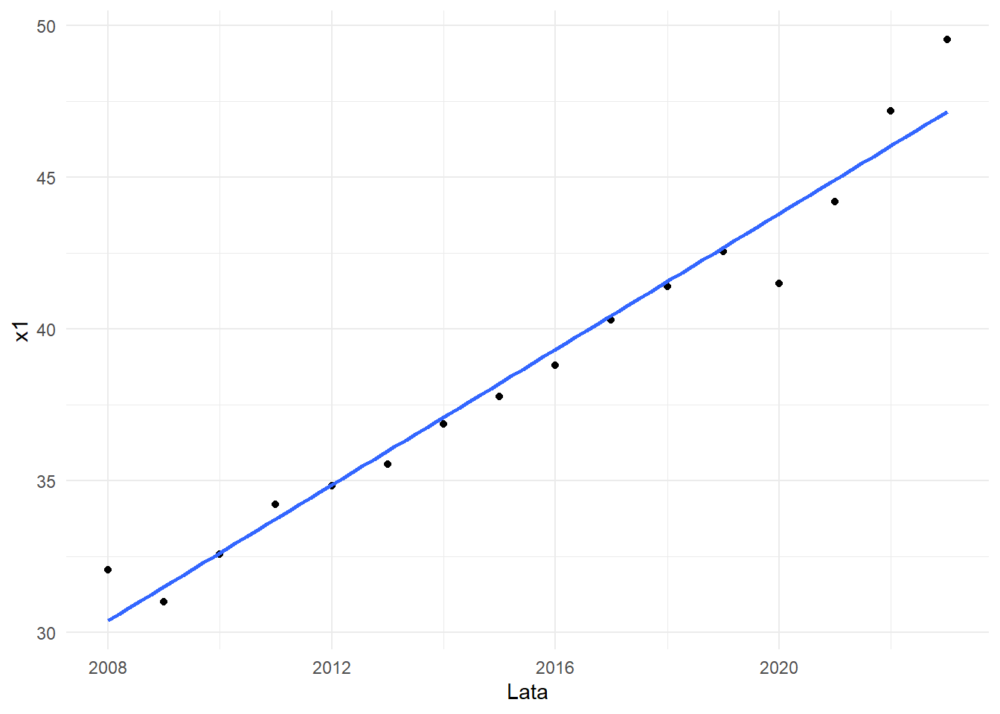
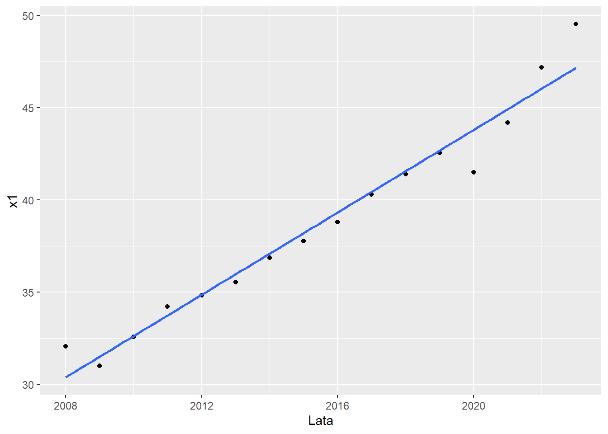
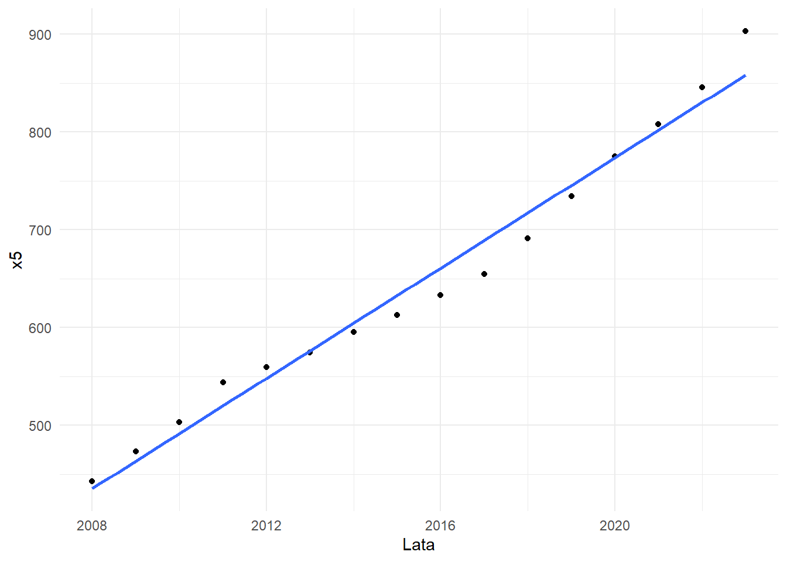

library(tidyverse)
library(readxl)
library(lmtest)
library(tseries)
library(xtable)Projekt_kod
Biblioteki
Wczytywanie danych i czyszczenie
dane <- read_xlsx("../Ekonometria_projekt/dane/Dane2.xlsx")
dane# A tibble: 16 × 12
L.p Lata `y - B+R na 1 mieszkanca` `x1 - PKB per capita`
<dbl> <dbl> <dbl> <dbl>
1 1 2023 1561. 49.5
2 2 2022 1449. 47.2
3 3 2021 1360. 44.2
4 4 2020 1282. 41.5
5 5 2019 1324. 42.5
6 6 2018 1263. 41.4
7 7 2017 1204. 40.3
8 8 2016 1119. 38.8
9 9 2015 1087. 37.8
10 10 2014 1040. 36.9
11 11 2013 989. 35.6
12 12 2012 984. 34.8
13 13 2011 941. 34.2
14 14 2010 856. 32.6
15 15 2009 819 31
16 16 2008 811. 32.1
# ℹ 8 more variables: `x2 - Stopa procentowa` <dbl>,
# `x3 - stopa inflacji` <dbl>, `x4 - Liczba_studentów na 1000 osób` <dbl>,
# `x5 - Wydatki_na_edukację_wyższą_na_osobę` <dbl>,
# `x6 - Liczba_zarejstrowanych_startapów_w_1000` <dbl>,
# `x7 - Liczba_zgłoszonych_patentów_w_1000` <dbl>,
# `x8 - Liczba osoób zatrudnionych w R&D na 1000 osób pracujących` <dbl>,
# `x9 - Stopa_bezrobocia` <dbl>Czyszczenie danych
dane <- dane %>%
rename(y = 3) %>%
rename_with(.cols = 4:ncol(.), .fn = ~ paste0("x", seq_along(.))) %>%
mutate(
x4 = round(x4),
x6 = round(x6),
x7 = round(x7),
x8 = round(x8)
)
dane# A tibble: 16 × 12
L.p Lata y x1 x2 x3 x4 x5 x6 x7 x8 x9
<dbl> <dbl> <dbl> <dbl> <dbl> <dbl> <dbl> <dbl> <dbl> <dbl> <dbl> <dbl>
1 1 2023 1561. 49.5 0.489 5.95 34 903. 593 38 19 3.07
2 2 2022 1449. 47.2 0.0198 6.87 35 846. 555 37 18 3.12
3 3 2021 1360. 44.2 -0.0584 3.07 35 808. 583 40 17 3.59
4 4 2020 1282. 41.5 -0.0584 0.14 35 775. 544 42 17 3.88
5 5 2019 1324. 42.5 -0.0508 1.45 35 734. 551 47 17 3.16
6 6 2018 1263. 41.4 -0.047 1.73 35 691. 542 47 16 3.38
7 7 2017 1204. 40.3 -0.047 1.51 34 655. 550 48 16 3.78
8 8 2016 1119. 38.8 -0.045 0.49 34 633. 554 48 15 4.10
9 9 2015 1087. 37.8 -0.0247 0.51 34 612. 572 47 15 4.61
10 10 2014 1040. 36.9 -0.011 0.91 33 595. 586 48 14 4.98
11 11 2013 989. 35.6 0 1.5 32 574. 616 48 14 5.32
12 12 2012 984. 34.8 0.0151 2.01 31 560. 619 47 14 5.37
13 13 2011 941. 34.2 0.0617 2.08 30 544. 679 47 14 5.97
14 14 2010 856. 32.6 0.0304 1.1 27 503. 720 47 13 7.04
15 15 2009 819 31 0.0485 0.31 26 474. 716 48 13 7.88
16 16 2008 811. 32.1 0.422 2.63 25 443. 687 49 13 7.51Regresja Krokowa
Krok 1
model <- lm(y ~ x1 + x2 + x3 + x4 + x5 + x6 + x7 + x8 + x9, data = dane)
summary(model) #%>% xtable()
Call:
lm(formula = y ~ x1 + x2 + x3 + x4 + x5 + x6 + x7 + x8 + x9,
data = dane)
Residuals:
Min 1Q Median 3Q Max
-12.021 -4.403 -2.953 3.702 16.015
Coefficients:
Estimate Std. Error t value Pr(>|t|)
(Intercept) -7.004e+02 6.957e+02 -1.007 0.3529
x1 1.907e+01 7.910e+00 2.411 0.0525 .
x2 -4.178e+01 3.797e+01 -1.100 0.3134
x3 2.953e+00 6.812e+00 0.433 0.6798
x4 -4.286e+00 8.017e+00 -0.535 0.6121
x5 7.630e-01 4.239e-01 1.800 0.1219
x6 6.632e-03 2.143e-01 0.031 0.9763
x7 8.541e+00 5.837e+00 1.463 0.1937
x8 2.477e+01 1.328e+01 1.866 0.1113
x9 -8.343e+00 2.626e+01 -0.318 0.7615
---
Signif. codes: 0 '***' 0.001 '**' 0.01 '*' 0.05 '.' 0.1 ' ' 1
Residual standard error: 12.33 on 6 degrees of freedom
Multiple R-squared: 0.9988, Adjusted R-squared: 0.9971
F-statistic: 572.9 on 9 and 6 DF, p-value: 4.198e-08Krok 2
model <- lm(y ~ x1 + x2 + x3 + x4 + x5 + x7 + x8 + x9, data = dane)
summary(model)
Call:
lm(formula = y ~ x1 + x2 + x3 + x4 + x5 + x7 + x8 + x9, data = dane)
Residuals:
Min 1Q Median 3Q Max
-12.036 -4.471 -3.023 3.767 16.008
Coefficients:
Estimate Std. Error t value Pr(>|t|)
(Intercept) -697.7012 639.1105 -1.092 0.3111
x1 18.9994 6.9831 2.721 0.0297 *
x2 -41.9833 34.5999 -1.213 0.2643
x3 3.0374 5.7788 0.526 0.6154
x4 -4.3641 7.0441 -0.620 0.5552
x5 0.7696 0.3400 2.264 0.0580 .
x7 8.5995 5.1105 1.683 0.1363
x8 24.6831 11.9818 2.060 0.0784 .
x9 -8.1298 23.4614 -0.347 0.7391
---
Signif. codes: 0 '***' 0.001 '**' 0.01 '*' 0.05 '.' 0.1 ' ' 1
Residual standard error: 11.41 on 7 degrees of freedom
Multiple R-squared: 0.9988, Adjusted R-squared: 0.9975
F-statistic: 751.8 on 8 and 7 DF, p-value: 1.433e-09Krok 3
model <- lm(y ~ x1 + x2 + x3 + x4 + x5 + x7 + x8, data = dane)
summary(model)
Call:
lm(formula = y ~ x1 + x2 + x3 + x4 + x5 + x7 + x8, data = dane)
Residuals:
Min 1Q Median 3Q Max
-12.247 -3.796 -2.730 3.561 16.621
Coefficients:
Estimate Std. Error t value Pr(>|t|)
(Intercept) -913.4649 135.9233 -6.720 0.00015 ***
x1 19.5516 6.4140 3.048 0.01586 *
x2 -45.0255 31.5734 -1.426 0.19168
x3 4.1005 4.6200 0.888 0.40068
x4 -2.2542 3.3419 -0.675 0.51899
x5 0.7893 0.3162 2.496 0.03719 *
x7 9.7236 3.7254 2.610 0.03113 *
x8 26.0915 10.6335 2.454 0.03971 *
---
Signif. codes: 0 '***' 0.001 '**' 0.01 '*' 0.05 '.' 0.1 ' ' 1
Residual standard error: 10.77 on 8 degrees of freedom
Multiple R-squared: 0.9988, Adjusted R-squared: 0.9978
F-statistic: 965.3 on 7 and 8 DF, p-value: 4.577e-11Krok 4
model <- lm(y ~ x1 + x2 + x3 + x5 + x7 + x8, data = dane)
summary(model)
Call:
lm(formula = y ~ x1 + x2 + x3 + x5 + x7 + x8, data = dane)
Residuals:
Min 1Q Median 3Q Max
-13.3254 -5.0853 -0.7095 3.1531 17.2992
Coefficients:
Estimate Std. Error t value Pr(>|t|)
(Intercept) -889.3039 127.0867 -6.998 6.34e-05 ***
x1 18.5591 6.0510 3.067 0.0134 *
x2 -30.8016 22.7765 -1.352 0.2093
x3 4.1633 4.4770 0.930 0.3767
x5 0.7210 0.2904 2.483 0.0348 *
x7 8.5950 3.2261 2.664 0.0259 *
x8 28.4718 9.7224 2.928 0.0168 *
---
Signif. codes: 0 '***' 0.001 '**' 0.01 '*' 0.05 '.' 0.1 ' ' 1
Residual standard error: 10.44 on 9 degrees of freedom
Multiple R-squared: 0.9988, Adjusted R-squared: 0.9979
F-statistic: 1199 on 6 and 9 DF, p-value: 1.539e-12Krok 5
model <- lm(y ~ x1 + x2 + x5 + x7 + x8, data = dane)
summary(model)
Call:
lm(formula = y ~ x1 + x2 + x5 + x7 + x8, data = dane)
Residuals:
Min 1Q Median 3Q Max
-13.848 -4.352 -2.096 2.867 17.451
Coefficients:
Estimate Std. Error t value Pr(>|t|)
(Intercept) -806.7406 90.3131 -8.933 4.43e-06 ***
x1 23.0126 3.6734 6.265 9.33e-05 ***
x2 -27.3356 22.3171 -1.225 0.24869
x5 0.5246 0.1979 2.650 0.02429 *
x7 6.0899 1.7631 3.454 0.00618 **
x8 28.0847 9.6476 2.911 0.01554 *
---
Signif. codes: 0 '***' 0.001 '**' 0.01 '*' 0.05 '.' 0.1 ' ' 1
Residual standard error: 10.37 on 10 degrees of freedom
Multiple R-squared: 0.9986, Adjusted R-squared: 0.9979
F-statistic: 1458 on 5 and 10 DF, p-value: 5.649e-14Krok 6
model_koncowy <- lm(y ~ x1 + x5 + x7 + x8, data = dane)
summary(model_koncowy)
Call:
lm(formula = y ~ x1 + x5 + x7 + x8, data = dane)
Residuals:
Min 1Q Median 3Q Max
-13.551 -6.472 -1.119 3.333 18.600
Coefficients:
Estimate Std. Error t value Pr(>|t|)
(Intercept) -838.8670 88.3641 -9.493 1.24e-06 ***
x1 21.1369 3.4141 6.191 6.80e-05 ***
x5 0.6828 0.1533 4.455 0.000970 ***
x7 7.4075 1.4283 5.186 0.000301 ***
x8 24.2477 9.3301 2.599 0.024744 *
---
Signif. codes: 0 '***' 0.001 '**' 0.01 '*' 0.05 '.' 0.1 ' ' 1
Residual standard error: 10.6 on 11 degrees of freedom
Multiple R-squared: 0.9984, Adjusted R-squared: 0.9979
F-statistic: 1743 on 4 and 11 DF, p-value: 2.5e-15Modele jednowymiarowe i trendy
Dla x1 trendy
wykres1 <- ggplot(dane, aes(y = x1, x = Lata))+
geom_point()+
geom_smooth(method = "lm", se = F)+
theme_minimal()
ggsave("wykres1.png", plot = wykres1, width = 8, height = 6, dpi = 300)`geom_smooth()` using formula = 'y ~ x'wykres1`geom_smooth()` using formula = 'y ~ x'
Dla x1 model
model_x1 <- lm(Lata~x1, data = dane)
ggplot(dane, aes(x = Lata, y = x1))+
geom_point()+
geom_smooth(method = "lm", se = F)`geom_smooth()` using formula = 'y ~ x'
summary(model_x1) %>%
xtable()% latex table generated in R 4.3.1 by xtable 1.8-4 package
% Thu May 8 12:54:27 2025
\begin{table}[ht]
\centering
\begin{tabular}{rrrrr}
\hline
& Estimate & Std. Error & t value & Pr($>$$|$t$|$) \\
\hline
(Intercept) & 1982.1270 & 1.7957 & 1103.79 & 0.0000 \\
x1 & 0.8608 & 0.0459 & 18.75 & 0.0000 \\
\hline
\end{tabular}
\end{table}Dla x5 model
model_x2 <- lm(Lata~x5, data = dane)
summary(model_x2) %>%
xtable()% latex table generated in R 4.3.1 by xtable 1.8-4 package
% Thu May 8 12:54:28 2025
\begin{table}[ht]
\centering
\begin{tabular}{rrrrr}
\hline
& Estimate & Std. Error & t value & Pr($>$$|$t$|$) \\
\hline
(Intercept) & 1993.1037 & 0.9501 & 2097.85 & 0.0000 \\
x5 & 0.0346 & 0.0014 & 24.06 & 0.0000 \\
\hline
\end{tabular}
\end{table}Dla x2 wykres
wykres2 <- ggplot(dane, aes(y = x5, x = Lata))+
geom_point()+
geom_smooth(method = "lm", se = F)+
theme_minimal()
wykres2`geom_smooth()` using formula = 'y ~ x'
#ggsave("wykres2.png", plot = wykres2, width = 8, height = 6, dpi = 300)options(scipen = 999)
dane$y * 1e9 [1] 1560660000000 1448980000000 1360440000000 1281650000000 1324120000000
[6] 1262510000000 1204420000000 1119310000000 1086860000000 1040310000000
[11] 988640000000 983640000000 941380000000 856160000000 819000000000
[16] 811030000000summary(lm(y~x8, data = dane))
Call:
lm(formula = y ~ x8, data = dane)
Residuals:
Min 1Q Median 3Q Max
-51.332 -17.103 -5.088 18.183 67.173
Coefficients:
Estimate Std. Error t value Pr(>|t|)
(Intercept) -706.138 70.661 -9.993 0.000000094196369 ***
x8 119.948 4.582 26.178 0.000000000000273 ***
---
Signif. codes: 0 '***' 0.001 '**' 0.01 '*' 0.05 '.' 0.1 ' ' 1
Residual standard error: 33.5 on 14 degrees of freedom
Multiple R-squared: 0.98, Adjusted R-squared: 0.9785
F-statistic: 685.3 on 1 and 14 DF, p-value: 0.0000000000002725ggplot(dane, aes(y = y, x = x8))+
geom_point()+
geom_smooth(method = "lm", se = F)+ # normalny zapis
scale_y_continuous(limits = range(dane$y))+
theme_minimal()`geom_smooth()` using formula = 'y ~ x'Warning: Removed 2 rows containing missing values (`geom_smooth()`).
Testy
Liniowość – Test RESEST
reset <- resettest(model_koncowy)
reset_df <- data.frame(
"Statystyka testowa" = reset$statistic,
"Wartość p" = reset$p.value,
"Stopnie swobody 1" = reset$parameter[1],
"Stopnie swobody 2" = reset$parameter[2],
check.names = FALSE
)
#xtable(reset_df, caption = "Wyniki testu RESET dla modelu końcowego", digits = 4)
reset
RESET test
data: model_koncowy
RESET = 0.31165, df1 = 2, df2 = 9, p-value = 0.7398Homoskedastyczność - Test Goldfelda-Quandta
gq <- gqtest(model_koncowy)
gq_df <- data.frame(
`statystyka` = gq$statistic,
`df1` = gq$parameter[1],
`df2` = gq$parameter[2],
`p-wartość` = gq$p.value,
check.names = FALSE
)
xtable(gq_df, caption = "Test Goldfelda–Quandta", digits = 4)% latex table generated in R 4.3.1 by xtable 1.8-4 package
% Thu May 8 12:54:29 2025
\begin{table}[ht]
\centering
\begin{tabular}{rrrrr}
\hline
& statystyka & df1 & df2 & p-wartość \\
\hline
GQ & 0.6247 & 3.0000 & 3.0000 & 0.6457 \\
\hline
\end{tabular}
\caption{Test Goldfelda–Quandta}
\end{table}gq
Goldfeld-Quandt test
data: model_koncowy
GQ = 0.62471, df1 = 3, df2 = 3, p-value = 0.6457
alternative hypothesis: variance increases from segment 1 to 2Autokorelacja składników losowych – Test Durbina-Watsona
dwtest(model_koncowy)
Durbin-Watson test
data: model_koncowy
DW = 2.347, p-value = 0.4757
alternative hypothesis: true autocorrelation is greater than 0Rozkład normalny reszt – Test JBT
reszty <- resid(model_koncowy)
jarque.bera.test(reszty)
Jarque Bera Test
data: reszty
X-squared = 1.0277, df = 2, p-value = 0.5982